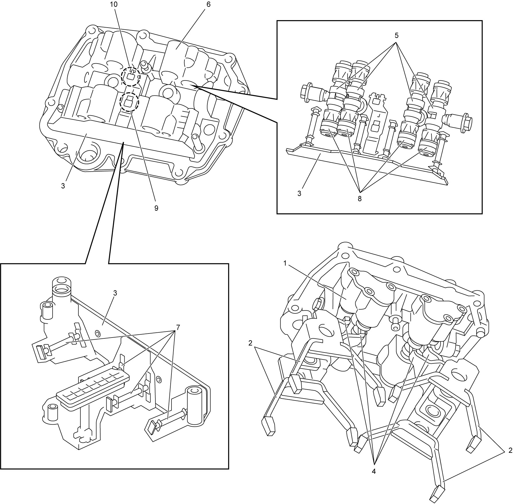

5F
| Twin Clutch System Description |
The twin clutch system unit provides manual type six forward speeds and one reverse gearbox (1), dry type twin clutch unit (2) and electrohydraulic unit (3). A select lever (4) on the floor tunnel selects driving mode. A parking lock wheel and pawl are provided in the gearbox.
TCM controls gear shift and operation of two clutches using hydraulic pressure and solenoid valves. Two clutch discs activate engagement and release of odd number gears and even number gears separately.
 "Expand image")
| 5. | Twin clutch system actuation fluid reservoir | 6. | Parking position sensor | 7. | Parking cable |
Gearbox Construction
Gearbox of the twin clutch system has a three-shaft layout: coaxial input shaft i.e. inner input shaft (1) and outer input shaft (2), upper countershaft (3) and lower countershaft (4), and four synchromesh devices: 2nd–4th speed sleeve & hub (5) and reverse–5th speed sleeve & hub (6) on upper countershaft, and 1st–3rd speed sleeve & hub (7) and 6th speed sleeve & hub (8) on lower countershaft.
To transmit the engine torque to the gearbox, two dry clutches positioned on the input shaft are operated by two different hydraulic actuators separately.
 "Expand image")
| 9. | Upper countershaft reverse gear | 13. | Lower countershaft 1st gear | 17. | Odd gear clutch disc (driven plate): On inner input shaft for odd gears |
| 10. | Upper countershaft 5th gear | 14. | Lower countershaft 3rd gear | 18. | Even gear clutch disc (driven plate): On outer input shaft for even gears |
| 11. | Upper countershaft 2nd gear | 15. | Parking lock wheel | 19. | Final gear |
| 12. | Upper countershaft 4th gear | 16. | Lower countershaft 6th gear | 20. | Differential case |
Specifications
| Item | Specifications | |
|---|---|---|
| Number of speed | Forward 6-speed and 1-reverse | |
| Shaft layout | 3-shaft | |
| Synchronizer | 1st, 2nd and 3rd | 3-cone |
| 4th and Rev | 2-cone | |
| 5th and 6th | 1-cone | |
| Gear ratio | 1st | 4.154 |
| 2nd | 2.269 | |
| 3rd | 1.435 | |
| 4th | 0.978 | |
| 5th | 0.755 | |
| 6th | 0.622 | |
| Reverse | 4.000 | |
| Final gear | 3.833 | |
| Number of solenoid | 5 | |
| Parking system | Parking lock wheel and pawl | |
| Odd gear clutch | Normally closed (engaged) | |
| Even gear clutch | Normally open (released) | |
| Flywheel in twin clutch unit | Intermediate flywheel | |
| Transaxle oil | SUZUKI TWIN CLUTCH SYSTEM GEAR OIL 0001 or PETRONAS TUTELA TRANSMISSION GEARFORCE: 990F0-TCSSG-000 | |
| Transaxle oil capacity | 2.1 liters (4.44/3.70 US/Imp. pt.) | |
| Twin clutch system actuation fluid | SUZUKI TWIN CLUTCH SYSTEM ACTUATOR FLUID 1001 or PETRONAS TUTELA CS SPEED: 990F0-TCSSA-000 | |
| Twin clutch system actuation fluid capacity | 0.8 liter (1.69/1.41 US/Imp. pt.) including reservoir | |
Control Device
Electrohydraulic unit
Electrohydraulic unit consists of power unit including electric motor (1), oil pump (2), accumulator (3), hydraulic system filter (4), low pressure oil pipe (5) and high pressure oil pipes (6), and solenoid valve unit (7), odd gear clutch control actuator (8), even gear clutch control actuator (9) and twin clutch system actuation fluid reservoir (10).
The power unit generates high oil pressure to manage solenoid valves and two clutch actuators for gear select and shift.

 "Expand image")
Solenoid valve unit
Solenoid valve unit consists of components listed below. Each solenoid valve functions to manage gear selection, gear shifting and clutch actuation controlled by TCM. The solenoid valve unit is provided with gear shift piston (gear shift actuator) assembly located behind the solenoid valves. This solenoid valve system operates at the line pressure of 4,400 to 4,500 kPa (44.9 to 45.9 kgf/cm2, 638 to 653 psi, 44 to 45 bar) normally.
 "Expand image")
| 1. | Line pressure sensor | 6. | Gear shift solenoid valve: No.2 | 11. | To power unit oil filter |
| 2. | Even gear clutch solenoid valve | 7. | Gear select position sensor | 12. | Oil pipe: To odd gear clutch control actuator |
| 3. | Gear select solenoid valve | 8. | Gear select oil control valve: Located inside | 13. | From accumulator |
| 4. | Gear shift solenoid valve No.1 | 9. | Even gear clutch pressure sensor | 14. | From oil pump |
| 5. | Odd gear clutch solenoid valve | 10. | Oil pipe to even gear clutch control actuator |
Hydraulic Diagram
Oil passages in the solenoid valve unit are connected as shown in figure. TCM controls five solenoids in the unit and operates four shift actuators and two clutch actuators respectively.
Odd gear clutch
Odd gear clutch normally closed is operated by odd gear clutch control actuator (1) receiving oil pressure from odd gear clutch solenoid valve (2).
Even gear clutch
Even clutch normally open is operated by even gear clutch control actuator (3) receiving oil pressure from even gear clutch solenoid valve (4).
Gear selection
Gear selection is managed by gear select oil control valve (9) receiving oil pressure from gear select solenoid valve (5).
Gear engagement
Gear engagement is managed by gear shift solenoid valve No.1 (6) for 2nd, 3rd and reverse gears and by gear shift solenoid valve No.2 (7) for 1st, 4th, 5th and 6th gears.
1st gear operation
This diagram shows 1st gear operation as an example. TCM operates gear select solenoid valve to move gear select oil control valve (9) to position “1”. In this position, oil passage is connected from gear shift solenoid valve No.2 to left (3rd) side of 1st & 3rd gear shift actuator (10) through gear selector. When oil pressure is applied from gear shift solenoid valve No.2, gear shift actuator piston is pushed to engage 1st gear. This gear shift to 1st gear is operated when odd gear clutch normally engaged is released by TCM. After engagement of 1st gear, TCM engages odd gear clutch.
2nd gear operation
While vehicle is started with 1st gear, gear select oil control valve moves to position “2” and oil passage is connected from gear shift solenoid valve No.1 to left (4th) side of 2nd & 4th gear shift actuator (12) through gear select oil control valve. Oil pressure from gear shift solenoid valve No.1 pushes shift actuator piston to pre-engage 2nd gear with even gear clutch opened.
1st to 2nd gear change
When vehicle is accelerated with 1st gear, odd gear clutch is released and even gear clutch is engaged for 2nd gear with function of odd gear clutch solenoid valve and even gear clutch solenoid valve controlled by TCM. These gear change and clutch control are applied to all other gears.
 "Expand image")
| 8. | Hydraulic power unit | 11. | 6th gear shift actuator | 13. | 5th & reverse gear shift actuator |
Gear Select Oil Control Valve
Position of the gear select oil control valve (1) located in the solenoid valve unit is controlled by oil pressure from gear select solenoid valve balanced with reaction of balance spring (2), and an oil passage is opened to required side of required gear shift actuator. The oil passage is selected from eight sides in four gear shift actuators according to the gear shift requirement. TCM monitors the valve position using gear select oil control valve position sensor (gear select position sensor) (3) and magnetic end (4) on the valve.
 "Expand image")
Gear Shift Fork
Gear shift device consists of gear shift piston (gear shift actuator) assembly (1), gear shift forks (2) and shift position sensor module (3). End of each shift fork arm (4) engages with cutout of shift piston (gear shift actuator) (5) at the center respectively. Each shift fork moves to engage gears by operating force of the shift piston in the gear shift piston housing (6) and the shifted position is detected by gear shift position sensors (7) in the sensor module sensing movement of the magnetic end (8) on the shift piston respectively. Rotation speed of inner input shaft for odd gears is detected by the odd gear clutch speed sensor (9) and rotation speed of outer input shaft for even gears is detected by the even gear clutch speed sensor (10). The speed sensor is composed of Hall effect device.

 "Expand image")
Gear Shift Fork and Sleeve
Arrangement of gear shift forks and gears is as follows. Input shaft and input shaft gears located on this side are not shown in this figure. Each shift fork is fitted over the synchronizer sleeve respectively.
 "Expand image")
| [A]: | Engine (Diff. & clutch) side | 7. | Reverse gear | 14. | 6th and 1st & 3rd gear shift shaft |
| 1. | 2nd & 4th and 5th & reverse gear shift shaft | 8. | Upper countershaft | 15. | Lower countershaft |
| 2. | 2nd & 4th gear shift fork | 9. | 1st & 3rd gear shift fork | 16. | Parking lock wheel |
| 3. | 4th gear | 10. | 3rd gear | 17. | 1st & 3rd gear synchronizer sleeve |
| 4. | 2nd gear | 11. | 1st gear: Gear itself is hidden | 18. | 2nd & 4th gear synchronizer sleeve |
| 5. | 5th & reverse gear shift fork | 12. | 6th gear shift fork | 19. | 5th & reverse gear synchronizer sleeve |
| 6. | 5th gear | 13. | 6th gear | 20. | 6th gear synchronizer sleeve |
Clutch Unit
Clutch unit consists of odd gear clutch assembly (1), odd gear clutch disc (driven plate) (2), odd gear clutch diaphragm spring (3), external spline (4) for connection to engine flywheel, intermediate flywheel (5), even gear clutch disc (driven plate) (6), even gear clutch cover (7), even gear clutch pressure plate (8), even gear clutch diaphragm spring (9) and even gear clutch cover bracket (10). Even gear clutch cover bracket is press-fitted to even gear clutch cover through ball bearing and the bracket is mounted on clutch housing. Even gear clutch cover rotates on the bracket together with other clutch components driven by the engine flywheel.
Even gear clutch disc (driven plate) is replaceable. However, it is necessary to replace odd gear clutch disc (driven plate) as odd gear clutch assembly.
 "Expand image")
| [A]: | Engine side | 11. | Strut plate |
Flywheel and Clutch Unit
Combination of engine flywheel (1) and clutch unit is as shown in figure. The clutch unit is not fixed on the engine flywheel directly but spline connected to each other and driven by the engine. Even gear clutch cover bracket (12) is fixed on clutch housing and the bracket supports even gear clutch cover bearing (11) and the bearing supports the clutch unit. Odd gear clutch disc (driven plate) (3) incorporated in odd gear clutch assembly (2) for odd gears is in engaged (closed) state and even gear clutch disc (driven plate) (9) for even gears is in released (open) state as the preliminary stage.
 "Expand image")
| [A]: | Engine side | 7. | Even gear clutch (even gear clutch) cover | 14. | Even gear clutch operating cylinder |
| 4. | Odd gear clutch pressure plate | 8. | Even gear clutch pressure plate | 15. | Even gear clutch thrust bearing |
| 5. | Odd gear clutch diaphragm spring | 10. | Even gear clutch diaphragm spring | ||
| 6. | Intermediate flywheel: Incorporated in odd gear clutch assembly | 13. | Odd gear clutch thrust bearing |
Clutch control actuator
Odd gear clutch control actuator
Odd gear clutch control actuator mainly consists of clutch operating piston (1) and thrust bearing control rod (2), and mounted on transaxle case outside at opposite of the clutch unit. The thrust bearing control rod is in extended position normally and odd gear clutch is engaged. To release (open) the odd gear clutch, the control rod is pulled by movement of operating piston receiving oil pressure from odd gear clutch solenoid valve controlled by TCM. Piston position sensor (Hall effect device) (3) monitors the position of the control rod and sends the positional information to TCM for odd gear clutch control.
 "Expand image")
| 4. | Mounting | 6. | Magnet |
| 5. | Oil inlet chamber | 7. | Air bleed |
Even gear clutch control actuator
Even gear clutch control actuator mainly consists of thrust bearing (1) and clutch operating cylinder housing (2), and the housing is mounted on transaxle case behind the even gear clutch. The thrust bearing is in extended position (even gear clutch diaphragm depressed condition) normally, therefore the even gear clutch diaphragm releases (opens) the even gear clutch.

 "Expand image")
Parking Unit
Parking lock wheel (1) is mounted on lower countershaft and the wheel engages with parking lock pawl (2) when select lever is shifted to P.
 "Expand image")
| 3. | Parking lock shaft | 5. | Parking lock arm | 7. | Bracket |
| 4. | Detent spring | 6. | Link rod |
Gear Change Operation
1st to 2nd change in D range
Gear engagement and clutch operation are controlled as follows.
1st gear sleeve engagement
When select lever is shifted to D with engine running, 1st & 3rd speed sleeve (1) engages with 1st gear (2) on lower countershaft. This gear shift is operated when odd gear clutch disc (driven plate) (4) for odd gears normally engaged (closed) is released (open) by TCM control. After engagement of the sleeve with the 1st gear, TCM controls odd gear clutch to engage for vehicle start. Therefore, the engine power is transmitted to the odd gear clutch disc (driven plate), inner input shaft 1st gear (3), lower countershaft 1st gear and final gear.
 "Expand image")
| [A]: | Engine side | 5. | Even clutch disc: Open state | 6. | Outer input shaft |
2nd gear pre-engagement
While driving in 1st gear (1), 2nd & 4th speed sleeve (2) pre-engages with 2nd gear (3) on lower countershaft. In this moment, even gear clutch (for even gears) (4) is open without control.
 "Expand image")
| [A]: | Engine side |
Odd gear clutch and even gear clutch switching
When accelerating, TCM releases (opens) odd gear clutch (1) and engages (closes) even gear clutch (2) successively.
In the transition period of clutch engagement from 1st to 2nd gear, there is a “Cross Shifting” stage for a short time. In that time, both clutches slip receiving the engine torque. The “Cross Shifting” provides smooth gear shift characteristics.

 "Expand image")
| [A]: | Engine side | 3. | Lower countershaft 2nd gear | 4. | Lower countershaft 1st gear |
2nd gear engagement
When odd gear clutch (1) is fully released (opened) and even gear clutch (2) is fully engaged (closed), the “Cross Shifting” stage ends and the vehicle starts to run in 2nd gear (3).

 "Expand image")
| [A]: | Engine side | 4. | Lower countershaft 1st gear |
Disengagement of 1st gear sleeve
Upon completion of gear shift to 2nd gear, 1st & 3rd speed sleeve (1) is disengaged from 1st gear (2) on lower countershaft.
 "Expand image")
| [A]: | Engine side | 5. | Odd clutch disc: Open | 8. | Inner input shaft 1st gear |
| 3. | Lower countershaft 2nd gear | 6. | Even clutch disc: Engaged | ||
| 4. | 2nd & 4th speed sleeve | 7. | Outer input shaft 2nd gear |
Twin Clutch System Control Operation
Start preparation
For smooth start of the system, oil pump in the hydraulic system functions when the door is opened and raises the hydraulic pressure before ignition is “ON”.
A smart drive unit (1) regulating voltage to reduce the oil pump motor noise is installed on a bracket behind the front left fender liner.

 "Expand image")
Engine starting
The engine can be started only when the select lever is in P or N position with brake pedal depressed.
Clutch-contact-point learning
To optimize clutch operation, TCM has a learning function to check the newest clutch reference point of both odd gear and even gear clutches.
Position sensor in the odd gear clutch control actuator detects the distance from the closed clutch position to clutch-contact-point. When engine is started with select lever in N, the clutch opens and closes automatically when the engine speed exceeds the threshold, and then the clutch-contact-point is detected and thus the clutch reference point is calculated.
The even gear clutch control actuator has no position sensor, however the clutch reference position is calculated using oil pressure in the supply duct when the 1st gear is engaged and odd gear clutch “Clutch-contact-point” is already detected. The standard oil pressure is from 300 to 500 kPa (3.1 to 5.1 kgf/cm2, 43.5 to 72.5 psi, 3 to 5 bar).
Vehicle start
When the vehicle is stopped, the vehicle can be started using 1st gear or reverse with brakes released and accelerator pedal depressed. The system engages the clutch gradually to start the vehicle but when the accelerator pedal is released, the clutch is also released automatically when the engine speed reaches threshold. When the system detects compatibility between engine speed and clutch speed (inner input shaft speed) the system engages the clutch completely.
When the vehicle is moving, starting with 2nd gear is also possible.
Automatic mode (D)
Automatic gear shift is available in D range selected by select lever. In D range, the system operates in a similar manner to a conventional automatic transaxle.
Engine braking
While the vehicle is running downhill increasing the speed with accelerator pedal released and the system detects the speed is approaching to the specified value, the system automatically engages the clutch to obtain engine brakes. However, when accelerator pedal is depressed, this clutch control will be canceled.
The automatic clutch engagement is not activated if the vehicle moves in the opposite direction to the gear position.
Shift retry control
When a gear fails to be engaged, the system attempts to engage the same gear again starting from neutral. If the engagement fails again, the system attempts a new engagement to higher gear compatible with the vehicle speed. If the new engagement fails, the system attempts other engagement twice more. When all of three attempts fail, gear is shifted to neutral.
Manual mode (M±)
Using select lever, manual mode upshift or downshift can be made sequentially within the specified range of engine speed while the vehicle is running and clutch is fully engaged. However, with a quick double operation of the select lever, gear may skip. Manual upshift can be operated without releasing the accelerator pedal.
Automatic downshift in manual mode
While driving in manual mode, the system operates one or more downshifting automatically and prevents engine stall which may be caused by extremely low engine speed. With this automatic downshift control, the vehicle can be slowed down without any manual operation until the 1st gear is engaged and the vehicle is stopped.
Creeping mode
Creep effect is available with odd gear clutch function and the vehicle moves at a very slow speed in D or R when the following conditions are met.
– Accelerator pedal is released
– Brakes are released
– Up-slope is below 5%
– Clutch temperature is below the threshold
– Tires are not stopped by pavement edge
Fail-safe driving mode
If any abnormal condition in the system occurs, only 1st, 2nd, 3rd or reverse gear can be engaged.
In some cases, engine speed is limited and fail-safe control map is applied.
Information display and buzzer
The system informs the driver of the following situations.
•Display: Shift range P, R, N, D, M and gear position in D or M, system failure, etc.
•Buzzer: Driver’s incorrect operation, vehicle start with overheating clutch, engine off with select lever in other than P and door opened, faulty system, etc.
•Buzzer: Driver’s incorrect operation, vehicle start with overheating clutch, engine off with select lever in other than P and door opened, faulty system, etc.